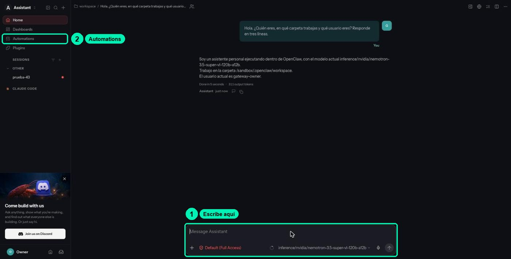

Securing Agents with OpenShell and NemoClaw
Securing Agents with OpenShell and NemoClaw4.2Explore the OpenClaw gateway and workspace
schedule≈8 mincomputerLab on Brev
listFull step by step
All the detail, start to finish.
🇪🇸 Original Spanish guide:
clases/4.2-gateway-y-workspace-openclaw/README.md. Slides, notebooks, cookbooks and video are in Spanish.
Open the folder that defines your agent, compare what the agent says about itself with what's on disk, and customize it for the Soporte NemoClaw (NemoClaw Support) project.
| Video length | ≈8 min |
| Practice | Lab on Brev: NemoClaw dashboard + in-browser terminal (cookbook.md (Spanish)) |
| Skill | Orientation (no assessed skill) |
Materials: slides · terminal cookbook (Spanish) · FAQ (Spanish)
Based on lesson 03b-openclaw from the NVIDIA DLI «NemoClaw» course (Apache-2.0).
What you'll achieve
- Name the pieces of OpenClaw (gateway, sessions, workspace) and which workspace file shapes each part of the behavior.
- Verify as the operator, with
lsandcat, what the agent claims about its files and its memory. - Customize
SOUL.mdso your agent behaves like Soporte NemoClaw, and test it in a new session. - List and reset sessions, and check that what's written to files survives into a new session.
Your credit: this practice uses ≈20 min of running instance, inside your single lab sitting (see the lab guide (Spanish)). If you stop for today, use Stop and come back soon. At the very end of the lab (after 5.3, or after the last optional practice you do), use Delete.
Before you start
- Class 4.1 finished: instance Running, your
my-assistantagent live, and the dashboard open. - If you closed the tab: Brev console → Compute → your instance → green NemoClaw button. It may ask you to sign in with NVIDIA again; that's normal.
- Remember how to use the VM TERMINAL: click inside the black area before typing, and ignore the
ExperimentalWarning: SQLite is an experimental featureline.
The pieces, in one table
| Piece | Where it lives | What it does |
|---|---|---|
| OpenClaw gateway | Inside the sandbox, port 18789 | Receives every turn, runs the agent loop, and serves the chat you open with CHAT WITH AGENT. |
| OpenShell gateway | On the machine (the host), port 18080, local only | Manages the sandbox lifecycle and the route to the model. You see it with openshell gateway info. |
| Sessions | In the OpenClaw gateway | The history of each conversation, identified by its session key. |
| Workspace | /sandbox/.openclaw/workspace/ |
Markdown files the agent reads at the start of every session. They are its configuration. |
The workspace, file by file:
| File | What it defines |
|---|---|
SOUL.md |
Personality, boundaries, tone, and values. |
AGENTS.md |
Operating instructions and rules: memory, safety, the flow of each session. |
IDENTITY.md |
A short card: name, language, emoji. |
USER.md |
Who the person it helps is, and their preferences. |
TOOLS.md |
Usage notes for each tool. |
HEARTBEAT.md |
A list of periodic tasks (we cover it in 4.3). |
POLICY.md |
A summary of the network policy, written by NemoClaw. |
memory/ |
Daily AAAA-MM-DD.md (YYYY-MM-DD) notes the agent appends as it works. Created the first time the agent saves a note. |
MEMORY.md |
Curated long-term memory. Created the first time the agent uses it. |
skills/ |
One folder per skill, with its SKILL.md. It shows up when you install the first skill (class 4.3). |
One detail causes a lot of errors: inside the sandbox, ~ is /sandbox, not the workspace. ~/SOUL.md points to /sandbox/SOUL.md, which the agent doesn't read as its personality. Always use the full path /sandbox/.openclaw/workspace/SOUL.md.
Step by step
Part A · Ask the agent to describe itself (chat)
- Open the chat. On the dashboard, MY-ASSISTANT card, click CHAT WITH AGENT. OpenClaw opens in a new tab.

- Ask it to describe its desk. Type:
Briefly list the files in your workspace and explain each one in a bullet, without dumping their contents.
You should see: a list of files with one explanation per bullet. Write it down: it's what the agent says.
Part B · Verify as the operator
-
Open the operator terminal. Go back to the dashboard tab and click VM TERMINAL.
-
List the real workspace. This command asks the sandbox for the list of files on the agent's desk:
You should see, in a freshly created lab:nemoclaw my-assistant exec -- ls -la /sandbox/.openclaw/workspaceAGENTS.md,HEARTBEAT.md,IDENTITY.md,POLICY.md,SOUL.md,TOOLS.md, andUSER.md. There's noMEMORY.md,memory/, orskills/yet, and that's normal. -
Read its personality and its rules. These commands show the contents of
SOUL.mdand the start ofAGENTS.md:nemoclaw my-assistant exec -- cat /sandbox/.openclaw/workspace/SOUL.md nemoclaw my-assistant exec -- head -n 30 /sandbox/.openclaw/workspace/AGENTS.md -
Compare. Did the agent mention a file that doesn't exist, like
MEMORY.md? Did it forget one, likePOLICY.md? That gap is the point of the class: what the agent says is not evidence; the file is.
Why it works this way: the lab has two planes of authority. The VM TERMINAL is the operator and runs outside the sandbox. The agent runs inside, under a narrower policy.
- (Optional) Look at the desk from inside. On the dashboard, click SANDBOX TERMINAL. That terminal is inside the room, like the agent. Type:
You should see:
whoami; echo "$HOME" ls /sandbox/.openclaw/workspacesandbox,/sandbox, and the same list of files. Notice: here~is/sandbox, not the workspace.
Part C · Customize SOUL.md for Soporte NemoClaw
You'll write your section into a file on the machine, upload it to the sandbox, and append it to the end of SOUL.md. All in the VM TERMINAL. The section stays in Spanish, as the course project answers in Spanish.
-
Write your section into a file. This command creates
~/soul-extra.mdon the machine with the text between the twoEOFlines. Replace the text with your own, or use this one:If you prefer an editor, usecat > ~/soul-extra.md <<'EOF' ## Proyecto: Soporte NemoClaw - Ayudas a estudiantes del curso "Seguridad de agentes con OpenShell y NemoClaw". - Respondes en español neutro, con frases cortas y pasos numerados. - Antes de responder, clasificas la duda en una categoría: instalacion, api_key, brev, seguridad u otro. - Si usas la FAQ del curso, citas el archivo de donde sale la respuesta. - Nunca pides, repites ni guardas API keys, tokens o cookies. Si alguien pega una, le pides que la revoque. - Si no sabes algo, lo dices y sugieres preguntar en el foro del curso. EOFnano ~/soul-extra.md, paste the text, save with Ctrl + O, Enter, and exit with Ctrl + X. -
Keep a copy of the original. This command copies
SOUL.mdto the sandbox's/tmpfolder, in case you want to go back:nemoclaw my-assistant exec -- cp /sandbox/.openclaw/workspace/SOUL.md /tmp/SOUL.md.original -
Upload your section to the sandbox. This command copies the file from the machine to the sandbox's
/tmpfolder, and the second one checks that it arrived:You should see: thenemoclaw my-assistant upload ~/soul-extra.md /tmp/ nemoclaw my-assistant exec -- ls -la /tmp/soul-extra.mdsoul-extra.mdfile, owned bysandbox. -
Append it to SOUL.md and read it back. The first command appends your section to the end of the file, inside the sandbox. The second shows the last lines:
You should see: the "Proyecto: Soporte NemoClaw" section at the end.nemoclaw my-assistant exec -- sh -c 'cat /tmp/soul-extra.md >> /sandbox/.openclaw/workspace/SOUL.md' nemoclaw my-assistant exec -- tail -n 9 /sandbox/.openclaw/workspace/SOUL.mdUse
>>(two signs), not>: with just one, you wipe everything that was inSOUL.md.To go back to the original:
nemoclaw my-assistant exec -- cp /tmp/SOUL.md.original /sandbox/.openclaw/workspace/SOUL.md. The copy in/tmpis erased if you stop the instance.
Part D · Test it in a new session
The agent reads the workspace at the start of each session. A conversation that was already open doesn't change.
-
Ask in a new session. In the VM TERMINAL:
Or in CHAT WITH AGENT: in the Sessions menu, open a new conversation and ask the same question.nemoclaw my-assistant agent --session-key soul-42 -m 'Who are you, who do you help, and what do you never do?'You should see: it mentions the course, neutral Spanish, and that it never asks for API keys.
Part E · Sessions and memory in files
-
List your sessions. This command shows the conversations the gateway keeps, in an easy-to-read format:
You should see: a JSON with your sessions and fields likenemoclaw my-assistant sessions list --json"agentId": "main"and"kind": "direct". Look for the keys you used (memo-41,soul-42). Without--json, the table is too wide for the browser terminal. -
Ask the agent to save a preference to a file. This is memory on disk, not in the conversation:
You should see: the agent says it saved it. Don't believe it yet.nemoclaw my-assistant agent --session-key memoria-a -m 'Agrega esta linea al final de /sandbox/.openclaw/workspace/MEMORY.md sin borrar nada: "soporte-pref-01: responde en español neutro y cita el archivo de la FAQ que usaste. Referencia REF-4821." Despues leelo de vuelta y cita la linea.' -
Check it as the operator. This command searches for the reference inside the file:
You should see: the line withnemoclaw my-assistant exec -- grep -n "REF-4821" /sandbox/.openclaw/workspace/MEMORY.mdREF-4821. If it doesn't show up, the agent didn't write it there, even if it said so. -
Reset the session and ask from another one. Resetting clears the conversation, not the files:
You should see:nemoclaw my-assistant sessions reset memoria-a nemoclaw my-assistant agent --session-key memoria-b -m 'Lee /sandbox/.openclaw/workspace/MEMORY.md e indica la preferencia y la referencia de soporte-pref-01.'REF-4821in the new session's answer. The conversation is gone; the file stayed.
Check that it worked
- ☐ You wrote down the list of files the agent gave you and the real
lslist, and you know whether they match. - ☐ You read
SOUL.mdandAGENTS.mdas the operator. - ☐
tailshows the "Proyecto: Soporte NemoClaw" section at the end ofSOUL.md. - ☐ A new session (
soul-42) answers with the Soporte NemoClaw identity. - ☐
sessions list --jsonshows your session keys. - ☐
REF-4821is inMEMORY.md, and thememoria-bsession recovers it.
Common errors
| Symptom | Cause | Fix |
|---|---|---|
| The agent says "done, I saved it" but the file didn't change | The model reports an action it didn't take, or it wrote to another path. | Always verify with cat or grep as the operator. Ask again with the full path and have it read the file back. |
You wrote to ~/SOUL.md and the agent didn't change |
Inside the sandbox, ~ is /sandbox, not the workspace. You wrote /sandbox/SOUL.md. |
Use /sandbox/.openclaw/workspace/SOUL.md. Delete the stray file: nemoclaw my-assistant exec -- rm /sandbox/SOUL.md. |
You changed SOUL.md and the open conversation stays the same |
The workspace is read at the start of each session. | Test with a new session key or a new conversation under Sessions. |
SOUL.md ended up with only your section |
You used > instead of >>. |
Restore the copy: nemoclaw my-assistant exec -- cp /tmp/SOUL.md.original /sandbox/.openclaw/workspace/SOUL.md and repeat with >>. |
After pasting the cat > … <<'EOF' block, the terminal shows > and waits |
The final EOF line is missing, or has spaces before it. |
Type EOF on its own, at the start of the line, and press Enter. |
MEMORY.md, memory/, or skills/ doesn't exist |
The agent hasn't saved memory or had skills installed yet. | That's normal. They're created the first time they're needed. |
ls: cannot access '/tmp/soul-extra.md' |
The file didn't reach the sandbox, or landed on another path. | Repeat the upload and check with nemoclaw my-assistant exec -- ls -la /tmp/. |
Pairing required in the chat |
The lab's chat comes already paired; this notice shouldn't show up. | Close the tab and open the chat again from CHAT WITH AGENT on the dashboard. |
You ran openclaw update inside the sandbox and it hung |
OpenClaw is pinned in the sandbox image. It isn't updated in place. | Don't do it. Cancel with Ctrl+C. In the course lab, don't touch versions. |
Challenge
Make the agent prove what it saves. Add this rule to the end of AGENTS.md, with the same method as Part C (file on the machine, upload to /tmp, and cat >>):
- Cada vez que digas que guardaste algo en un archivo, léelo de vuelta y cita la línea exacta que quedó escrita.
("Every time you say you saved something to a file, read it back and quote the exact line that was written.")
Success criteria: in a new session, you ask it to save a preference to MEMORY.md, its answer includes the line it read back, and grep as the operator confirms that line exists.
Project milestone
Your agent now has the Soporte NemoClaw identity:
SOUL.mdwith the project section (language, triage categories, the no-keys rule).MEMORY.mdwith thesoporte-pref-01preference (cite the FAQ file).
Copy the section you added to SOUL.md into your notes. Then repeat the 4.1 baseline question in a new session:
nemoclaw my-assistant agent --session-key linea-base-42 -m 'A student says: "My notebook returns HTTP 401 when I call the model". What do you tell them? Answer in 5 lines at most.'
Write down in your notes, under the baseline, what changed. It doesn't know the FAQ yet: that comes in 4.3 with the soporte-nemoclaw skill.